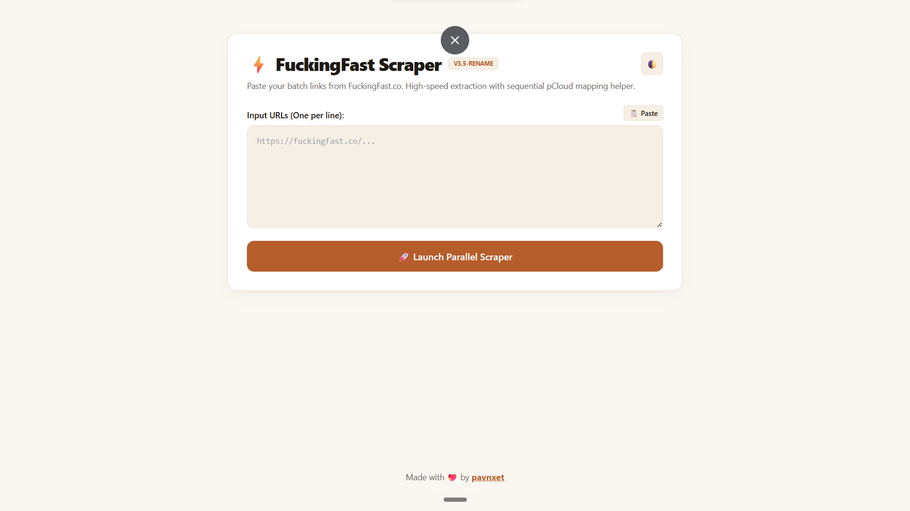
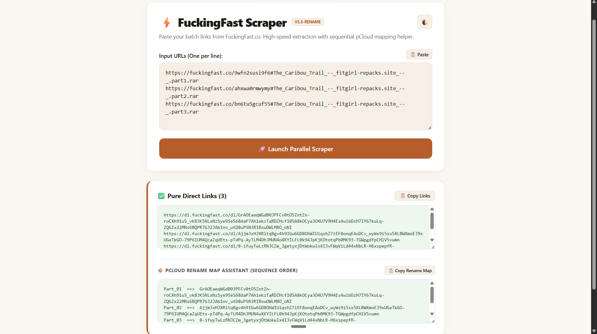

The Story Behind It
In my previous post, I shared how I created the FitGirl Archive Scanner to filter out game listings under 50 GB so my low-spec PC setup could actually run them. That tool saved me a massive amount of time during archive exploration, but the moment I selected an eligible title, I ran straight into an even bigger problem. The download files were split into thirty or forty separate 500 MB parts.
Downloading those archives meant clicking every single hosting link manually. Every single click triggered annoying pop-up ads and multi-stage browser redirect walls that ground my browser tabs to a halt. Gathering forty parts for just one game meant repeating this painful loop over a hundred times, cluttering my desktop and testing my patience.
I desperately wanted a clean tool where I could throw in a big block of host links at once, strip away the web clutter, and get the raw download paths instantly. I tried looking for existing bulk link utilities, but they were either abandoned, filled with telemetry, or completely broken.
So I decided to build it myself.
What the Project Does
FuckingFast Scraper is a lightweight automation matrix designed to eliminate the friction of grabbing multi-part game links. It acts as a shield between you and the click-heavy redirect layers of third-party cloud hosts.
You simply copy the entire list of fragmented page URLs from your browser and drop them into the input box on the dashboard. With one click, the system sweeps through all the entries at once and extracts the exact underlying download links. From there, you can copy the clean list straight into Internet Download Manager for an immediate batch download.

How It Works
The main architecture is built as a serverless application hosted directly on Cloudflare Workers, though it also includes a terminal-based Python module and a client-side UserScript. Processing the requests on an edge server ensures that your home network is spared from loading heavy browser trackers or running intense concurrent script tasks.
When you submit the list of paths, the backend script initiates concurrent HTTP fetch streams to read the raw HTML code of the hosting pages. Instead of spinning up a memory-heavy visual window, it evaluates the incoming text code directly. By targeting the exact window-opening functions using regular expressions, it isolates the original archive paths instantly and returns them to the frontend interface.
Exploring the Features
Parallel Link Resolving
The dashboard accepts up to thirty URLs simultaneously and resolves them all in parallel. This allows you to process an entire game package in a few seconds instead of waiting for links to clear one by one.

pCloud Rename Assistant
When pushing downloads straight to cloud networks, files often land with scrambled random hash names. This helper tracks the input sequence and creates an organized text map matching each hash to its clean numerical name, like Part_01 or Part_02.
Bulk Injector UserScript
For users who prefer keeping tasks inside the browser, the project includes a draggable UserScript file. It injects a compact automation panel directly onto your cloud interface to run tasks without visiting external sites.
Challenges I Ran Into
The toughest part of this project was dodging memory crashes inside the serverless worker environment. Serverless edge functions have incredibly tight resource allocations, meaning standard browser engines like Selenium or Puppeteer are impossible to use. To bypass this barrier, I abandoned visual render strategies entirely and focused purely on native fetch network streams. By writing a strict regular expression pattern to scrape the specific window script structures inside the raw HTML page, the engine extracts the link targets instantly without spinning up a single heavy asset.
"Dodging memory limitations inside a serverless worker environment meant bypassing standard heavy visual automation frameworks entirely and focusing on direct, regular-expression-driven extraction over raw HTML streams."
Maintaining the sequential file order was another major technical headache. When you shoot out thirty asynchronous web requests at the same exact time, they finish at completely unpredictable intervals. Part 12 might return a response before Part 1, which completely scrambles your download queue. I solved this by managing the asynchronous queue via a strict Promise.all mapping array. This structure guarantees that even if a link resolves late, its final position matches its exact starting order in the user textbox.
Finally, I had to ensure the scraper didn't trigger automated IP blocks or saturate remote network channels. Sending too many raw requests to a hosting site in a single burst looks like a denial-of-service attempt. To keep the script safe and avoid hitting web walls, I implemented a strict limit restricting each parallel execution batch to 30 elements.
Try It Yourself
The project is fully open for you to try or self-host. Get started with the links below:
- Live Demo: FuckingFast Live Worker Dashboard
- GitHub Repository: FitGirl DirectLink Extractor Repository
- Setup instructions are available in the project README.
What's Next
I am currently looking into building a small companion utility that can pass the resolved link lists directly into a local Internet Download Manager instance via an API webhook, removing the need to copy-paste entirely.
I am also updating the regular expression models to support several alternative hosting domains that show up on popular archive mirrors. If you want to contribute alternative script profiles or adjust the interface theme, please feel free to open an issue or drop a pull request on the GitHub repository.